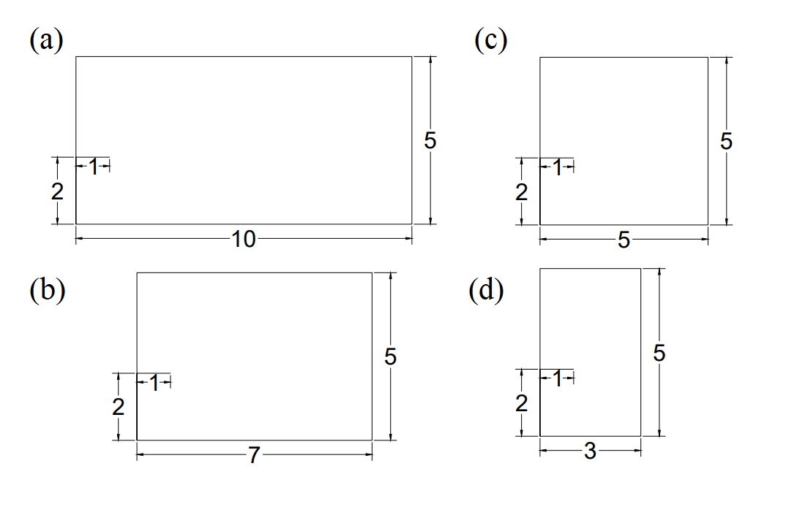
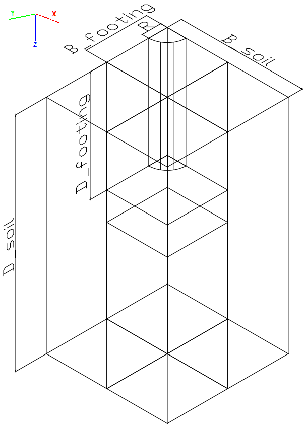
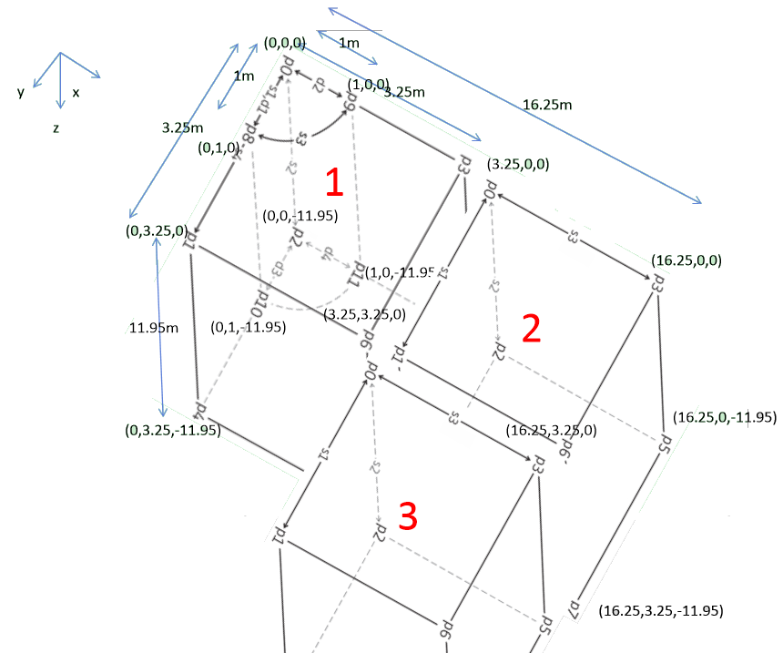
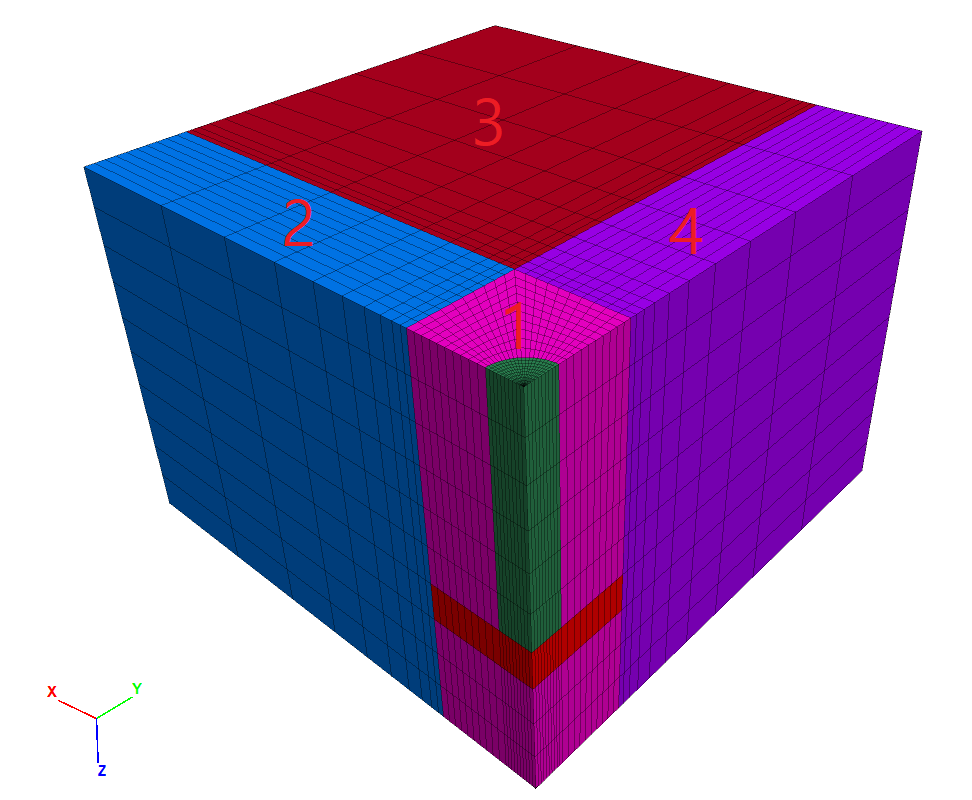

1 KAIST Model 2
1.1 Initial Configuration




############# SI UNIT ##################
####### m, Pa, kg/m3, m/s2, ##########
########################################
print(" ((((((((((((((((======== NEW RUN ========)))))))))))))))")
import itasca as it
import numpy as np
np.set_printoptions(threshold=20)
it.command("python-reset-state false")
from itasca import zonearray as za
from itasca import gridpointarray as gpa
########################################
############ PARAMETERS ################
########################################
# Mesh Details
_radial = 10
_perimeter = _radial
_axial = _radial
_outer = _radial
# Physical Constants
_gravity = 9.80665
_K = 0.318
# Dimensions
_D_shaft = 1.0
_H_shaft = 7.45
_T_plate = 1.5
_B_footing = 3.25
_D_footing = _H_shaft + _T_plate
_B_soil = _B_footing*5
_D_soil = _D_footing+3
# Concrete Properties
_bulk = 4.1667e10
_shear = 1.9231e10
_density_concrete = 2400
# Soil Properties
_E_o = 80e6
_const = 1e6
_poisson = 0.3
_density_soil = 1530
_cohesion = 10
_friction = 43
# Interface Properties
_stiff_norm = 1e10
_stiff_shear = 1e10
########################################
############### ZONES ##################
########################################
command_zone = """
model new
z crea r-c p 0 (0,0,0) ...
p 1 (0,{B_footing},0) ...
p 2 (0,0,{D_soil}) ...
p 3 ({B_footing},0,0) ...
p 4 (0,{B_footing},{D_soil}) ...
p 5 ({B_footing},0,{D_soil}) ...
p 6 ({B_footing},{B_footing},0) ...
p 7 ({B_footing},{B_footing},{D_soil}) ...
p 8 (0,{D_shaft},0) ...
p 9 ({D_shaft},0,0) ...
p 10 (0,{D_shaft},{D_soil}) ...
p 11 ({D_shaft},0,{D_soil}) ...
size {radial} {axial} 20 {outer} ...
rat 1 1 1 1 ...
fill
z crea b p 0 ({B_footing},0,0) ...
p 1 ({B_footing},{B_footing},0) ...
p 2 ({B_footing},0,{D_soil}) ...
p 3 ({B_soil},0,0) ...
p 4 ({B_footing},{B_footing},{D_soil}) ...
p 5 ({B_soil},0,{D_soil}) ...
p 6 ({B_soil},{B_footing},0) ...
p 7 ({B_soil},{B_footing},{D_soil}) ...
size {radial} {axial} {outer} ...
rat 1 1 1.4 ;blue
z crea b p 0 ({B_footing},{B_footing},0) ...
p 1 ({B_footing},{B_soil},0) ...
p 2 ({B_footing},{B_footing},{D_soil}) ...
p 3 ({B_soil},{B_footing},0) ...
p 4 ({B_footing},{B_soil},{D_soil}) ...
p 5 ({B_soil},{B_footing},{D_soil}) ...
p 6 ({B_soil},{B_soil},0) ...
p 7 ({B_soil},{B_soil},{D_soil}) ...
size {radial} {axial} {outer} ...
rat 1.4 1 1.4
z crea b p 0 (0,{B_footing},0) ...
p 1 (0,{B_soil},0) ...
p 2 (0,{B_footing},{D_soil}) ...
p 3 ({B_footing},{B_footing},0) ...
p 4 (0,{B_soil},{D_soil}) ...
p 5 ({B_footing},{B_footing},{D_soil}) ...
p 6 ({B_footing},{B_soil},0) ...
p 7 ({B_footing},{B_soil},{D_soil}) ...
size {radial} {axial} {outer} ...
rat 1.4 1 1 ;purple
"""
command = command_zone.format(
D_shaft = _D_shaft,
B_footing = _B_footing,
B_soil = _B_soil,
D_soil = _D_soil,
radial=_radial,
axial = _axial,
perimeter = _perimeter,
outer = _outer)
it.command(command)
########################################
################ GROUPS ################
########################################
p = za.pos()
x,y,z = p.T
shaft = reduce(np.logical_and, (np.sqrt(x**2+y**2)<_D_shaft, z<_H_shaft))
plate = reduce(np.logical_and, (x<_B_footing,y<_B_footing, z>_H_shaft,z<_D_footing))
za.set_group(shaft, "shaft")
za.set_group(plate, "plate")
print("radial mesh number is ", _radial)
print(it.zone.count(), "zones in whole model")
print(za.in_group("shaft").sum() + za.in_group("plate").sum(), "zones in shaft+plate group.")
########################################
######## CONSTITUTIVE MODEL ############
########################################
command_zone = """
zone cmodel assign mohr-coulomb range group ...
'Radial cylinder1' or ...
'plate' or ...
'shaft' or ...
'brick2' or ...
'brick3' or ...
'brick4'
; assign soil properties
zone property young {E_o_} ...
poisson {poisson_} ...
density {density_soil_} ...
cohesion {cohesion_} ...
friction {friction_} ...
flag-brittle true
; let modulus depends on depth
fish define fname(E_o,const)
loop foreach pnt zone.list
z_depth = zone.pos.z(pnt)
E = E_o+const*math.sqrt(z_depth)
zone.prop(pnt,'young')=E
end_loop
end
@fname({E_o_},{const_})
; assign concrete properties
zone cmodel assign elastic range group 'shaft' or 'plate'
zone property bulk {bulk_} ...
shear {shear_} ...
density {density_} range group 'shaft' or 'plate'
"""
command = command_zone.format(
E_o_=_E_o,
const_=_const,
poisson_=_poisson,
density_soil_=_density_soil,
cohesion_ = _cohesion,
friction_ = _friction,
bulk_=_bulk,
shear_=_shear,
density_=_density_concrete)
it.command(command)